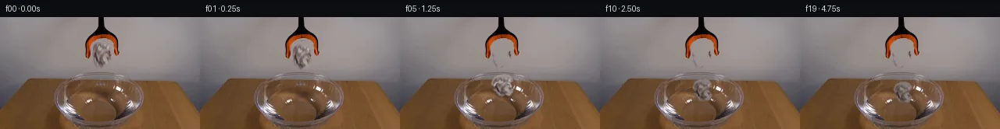

![首帧]()

Round 00
2026-11-05T06:07:21.484448+00:00像素候选变化代码 +288/−0inspection 更新
pixels 5ad586d27acaba9c · code 59cc936d26a46af8
查看本轮 generate.py 真实 diff
--- previous/generate.py
+++ current/generate.py
@@ -0,0 +1,288 @@
+from pathlib import Path
+import math
+
+import numpy as np
+from PIL import Image, ImageChops, ImageDraw, ImageFilter, ImageFont
+
+from artifact_io import save
+
+
+ROOT = Path(__file__).resolve().parent
+W, H = 256, 144
+RESAMPLE = Image.Resampling.BICUBIC
+
+
+def polygon_mask(points, blur=0.0):
+ mask = Image.new("L", (W, H), 0)
+ ImageDraw.Draw(mask).polygon(points, fill=255)
+ if blur:
+ mask = mask.filter(ImageFilter.GaussianBlur(blur))
+ return mask
+
+
+def build_clean_plate(source):
+ """Remove the held paper while explicitly protecting the visible gripper."""
+ src = np.asarray(source).copy()
+ clean = src.copy()
+
+ # Tight hand-measured silhouette of the paper in frame 00.
+ paper_poly = [
+ (126, 25), (133, 26), (138, 30), (141, 35), (141, 41),
+ (138, 47), (141, 54), (140, 60), (136, 65), (131, 62),
+ (128, 65), (124, 62), (122, 57), (119, 53), (120, 48),
+ (117, 43), (118, 36), (121, 31),
+ ]
+ raw_paper = np.asarray(polygon_mask(paper_poly), dtype=np.uint8) > 0
+
+ # Only these geometric zones can be tool. Dark paper folds in the center are
+ # intentionally not protected, while the black stem and both claw arms are.
+ left_zone = np.asarray(polygon_mask([
+ (109, 20), (124, 18), (124, 31), (120, 38), (119, 52),
+ (112, 54), (108, 43),
+ ]), dtype=np.uint8) > 0
+ right_zone = np.asarray(polygon_mask([
+ (134, 18), (148, 21), (151, 43), (146, 54), (139, 52),
+ (138, 39), (134, 31),
+ ]), dtype=np.uint8) > 0
+ stem_zone = np.zeros((H, W), bool)
+ stem_zone[:32, 122:136] = True
+ lum = src.mean(axis=2)
+ chroma = src.max(axis=2) - src.min(axis=2)
+ orange = (src[:, :, 0] > 85) & (src[:, :, 0] > src[:, :, 1] * 1.35) & (chroma > 35)
+ black_tool = (lum < 58) & (left_zone | right_zone | stem_zone)
+ tool = orange | black_tool
+ remove = raw_paper & ~tool
+
+ # The wall is very smooth. Reconstruct each row from clean wall samples on
+ # both sides, including deterministic fine grain from neighboring pixels.
+ for y in range(23, 68):
+ lpatch = src[max(0, y - 2):min(H, y + 3), 96:105].reshape(-1, 3)
+ rpatch = src[max(0, y - 2):min(H, y + 3), 154:163].reshape(-1, 3)
+ lc = np.median(lpatch, axis=0)
+ rc = np.median(rpatch, axis=0)
+ for x in range(114, 146):
+ u = np.clip((x - 105) / 49.0, 0, 1)
+ color = lc * (1 - u) + rc * u
+ # Recycle tiny wall texture, never random temporal noise.
+ sample_x = 91 + ((x + 3 * y) % 10)
+ local = src[y, sample_x].astype(float)
+ local_mean = src[y, 91:101].mean(axis=0)
+ color += 0.28 * (local - local_mean)
+ if remove[y, x]:
+ clean[y, x] = np.clip(color, 0, 255)
+
+ # Feather only the boundary of the removal, then restore tool pixels exactly.
+ remove_img = Image.fromarray((remove * 255).astype(np.uint8)).filter(
+ ImageFilter.GaussianBlur(0.65)
+ )
+ result = Image.composite(Image.fromarray(clean), source, remove_img)
+ result_arr = np.asarray(result).copy()
+ result_arr[tool] = src[tool]
+
+ # Sprite alpha: the paper silhouette minus visible gripper foreground.
+ alpha = np.asarray(polygon_mask(paper_poly, blur=0.55), dtype=np.uint8).copy()
+ alpha[tool] = 0
+ # Avoid gray wall fringe at the silhouette's extreme soft edge.
+ alpha = np.asarray(Image.fromarray(alpha).filter(ImageFilter.GaussianBlur(0.32)))
+ bbox = (115, 23, 145, 68)
… diff truncated; 201 more lines …